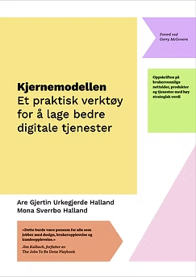

Strategisk innhaldsdesign med kjernemodellen
Bli ekspert på den enkle og effektive metoden som hjelper deg å:
- samarbeide på tvers av team og fagområder
- tenke strategisk og brukarorientert samtidig
- sjå produktet ditt i eit heilheitsperspektiv
- starte med det viktigaste
- gjere det enkelt og konkret
Lær metoden direkte frå opphavsmannen, og få alt av tips, triks og malar du treng for å ta i bruk metoden umiddelbart etter kurset.
Gå til påmelding
Kurset er basert på boka «Kjernemodellen – et praktisk verktøy for å lage bedre digitale tjenester» (Halland og Halland, Kraft forlag, 2021)
Managing Director,
Snøhetta Design ★★★★★ «Effektiv og god innføring i et solid og praktisk verktøy!»
Strategist, Aha Media
Group ★★★★★ «I walked away excited, motivated, and feeling equipped to do my job better!»
Senior service designer,
Itera ★★★★★ «Godt gjennomført og engasjerende kurs – anbefales!»
Kjernemodellen er eit praktisk og intuitivt rammeverk for å samarbeide om å lage brukarvennlege og strategisk forankra produkt og tenester.
På overflata er modellen enkel og intuitiv, men med dybdeforståelse av rammeverket kan du få til «magiske ting»:
- Forenkle, forankre og skape framdrift i prosjekter og prosessar
- Vere ein sentral del av felles verktøykasse i tverrfaglege team
- Skape eigarskap og auka digital modenheit i organisasjonen og/eller hos kunden
Målgruppe
- Produktteam som ønsker eit enkelt samarbeidsverktøy for å involvere teamet og nøkkelpersonar i organisasjonen
- Digitalbyrå som ønsker ein felles, enkel metodikk for å involvere oppdragsgivar og samarbeide betre internt
- Små og store bedrifter og organisasjonar som vil lage prioritert og effektiv kommunikasjon som løyser reelle behov hos kunden
Kurset passar for både offentleg sektor, private verksemder og frivillige organisasjonar.
«Utrolig nyttig kurs med masse praktiske eksempler som gjør det enkelt å ta i bruk kjernemodellen med en eneste gang. Gleder meg til å teste det ut på egne prosjekter!»
Elisabeth Heidenstrøm, CRM & Martech Manager i Sopra Steria
{{ r.tekst }}
Har du spørsmål om kurset?
Ring meg på 908 70 026, send epost til are@kjernekaren.no eller book ein kaffiprat.
Vi snakkast!
Are